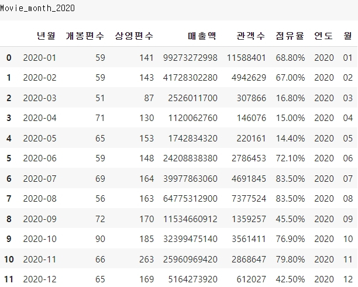
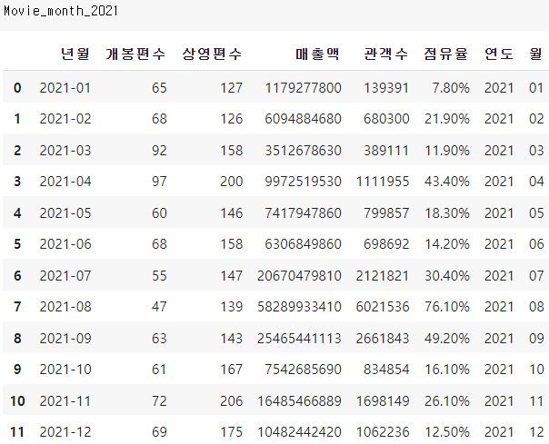
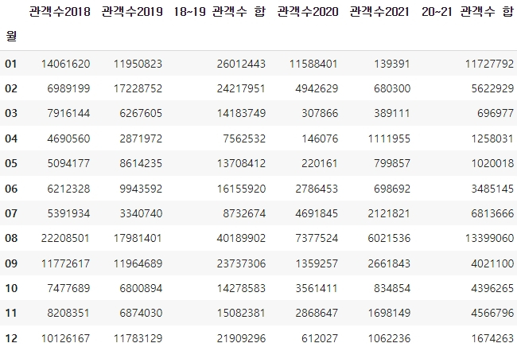
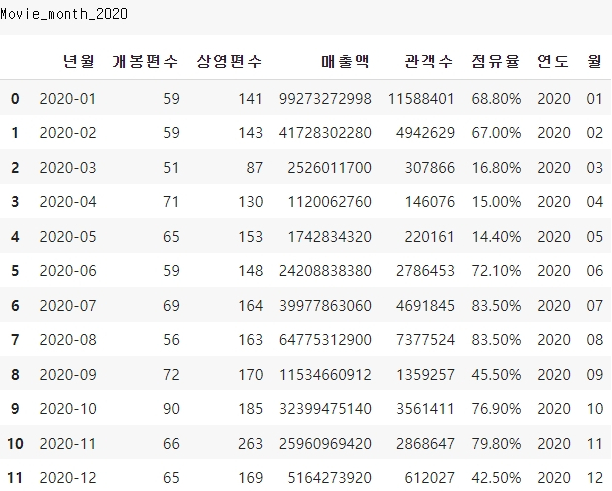
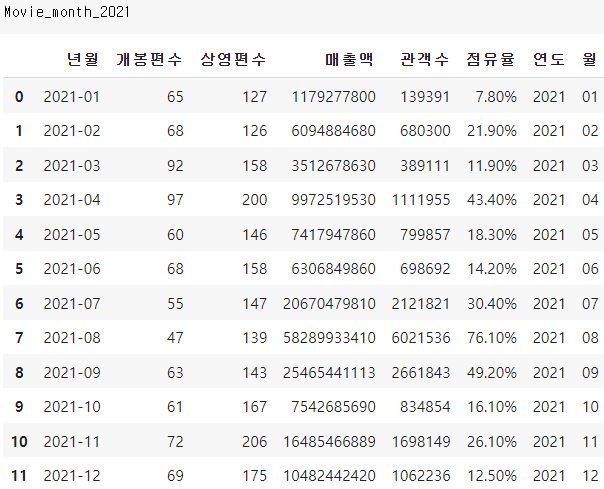
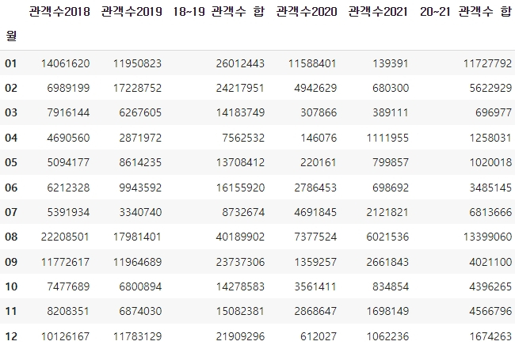

데이터
kobis 영화관입장권통합전산망을 사용했습니다.
KOBIS 영화관입장권통합전산망코로나19 감염증으로 인한 일별 확진자,완치자,지료중인환자,사망자등에 대한 현황자료를 함께 비교하며 코로나19 감염증이 문화생활, 그것도 영화산업에 어떤 유의미한 영향을 끼쳤는지 분석해보고자 합니다. 영화관의 총 이용 관객 수 및 매출과 관련해서 kobis의 통계자료를 활용하고 있습니다. 국내정세 파악을 위해 국내 자료만을 기준으로 삼았습니다. 이 통계는 전국 영화관의 발권 데이터를 집계한 것으로 재개봉 등 누적 상영에 따른 수치의 변동(증가)이 있을 수 있습니다.
줄거리를 통한 장르 분석 리뷰를 통한 감정 분석국내 영화관 이용 관객수 및 매출에 관한 데이터를 사용하기 위해 KOBIS 영화관입장권통합전산망 사이트를 활용했습니다. 전국 영화관의 이용 관객수, 매출, 상영 및 개봉 영화 편수, 점유율 등을 여러 기준으로 나누어 기간별로 제공하고 있는데, 데이터들 중 코로나와의 상관관계 분석을 위해 코로나가 발생한 2019년과 본격적으로 퍼지기 시작한 2020년을 기준으로 하여 전후 2개년의 데이터들을 추출하기로 결정했습니다.
아래의 코드는 해당 사이트에서 xls 파일을 다운로드 받아 csv 파일 형식으로 변환한 데이터들로써, 코로나가 지역별 연도별 월별 각 데이터변수들에 얼마나 유의미한 영향을 끼쳤는지 확인하기 위해 필요한 데이터들을 추출하는 전처리 작업및 pyechart 를 이용하기 위한 시각화 작업 세팅을 포함하고 있습니다.
설치 / import
# 코랩 한글 적용
!sudo apt-get install -y fonts-nanum
!sudo fc-cache -fv
!rm ~/.cache/matplotlib -rf
# 코랩 한글 적용 후 런타임 재시작
import matplotlib.pyplot as plt
plt.rc('font', family='NanumBarunGothic')
plt.rc('axes', unicode_minus=False)
# 설치
!pip install chart_studio
!pip install pyecharts
!pip install echarts-themes-pypkg
!pip install selenium
import xmltodict
!pip install snapshot-selenium
!pip install xmltodict
import requests
import time
from pyecharts.globals import CurrentConfig, NotebookType
CurrentConfig.NOTEBOOK_TYPE = NotebookType.JUPYTER_LAB
from pyecharts.globals import ThemeType
from pyecharts.commons.utils import JsCode
from pyecharts.charts import Bar, Bar3D, Grid, Line, Liquid, Page, Pie, Timeline, Tab, Map, Grid
from pyecharts import options as opts
from pyecharts.render import make_snapshot
import snapshot_selenium.snapshot as driver
from selenium import webdriver
import pandas as pd
from pandas.core.reshape.pivot import pivot_table
import copy
2018~2021년 사이의 월별, 지역별, 연도별 영화관 이용 관람객 수 및 매출 데이터
# 데이터 불러오기
Movie_all_year = "../content/drive/MyDrive/팀플자료/KOBIS_총_관객수_및_매출액_연도별_2004-2022.csv"
Movie_all_month_2018 = "../content/drive/MyDrive/팀플자료/KOBIS_총_관객수_및_매출액_월별_2018.csv"
Movie_all_month_2019 = "../content/drive/MyDrive/팀플자료/KOBIS_총_관객수_및_매출액_월별_2019.csv"
Movie_all_month_2020 = "../content/drive/MyDrive/팀플자료/KOBIS_총_관객수_및_매출액_월별_2020.csv"
Movie_all_month_2021 = "../content/drive/MyDrive/팀플자료/KOBIS_총_관객수_및_매출액_월별_2021.csv"
Movie_share_2018 = "../content/drive/MyDrive/팀플자료/KOBIS_지역별_점유율_2018.csv"
Movie_share_2019 = "../content/drive/MyDrive/팀플자료/KOBIS_지역별_점유율_2019.csv"
Movie_share_2020 = "../content/drive/MyDrive/팀플자료/KOBIS_지역별_점유율_2020.csv"
Movie_share_2021 = "../content/drive/MyDrive/팀플자료/KOBIS_지역별_점유율_2021.csv"
## 총관객수 및 매출액 자료(연도별) > 개봉편수 및 상영편수 분석자료 추출예정
Movie_year = pd.read_csv(Movie_all_year, encoding="utf-8", skiprows=4, thousands=",")
## 총관객수 및 매출액 자료(연도 > 월별)
Movie_month_2018 = pd.read_csv(Movie_all_month_2018, encoding="utf-8", skiprows=5, thousands=",")
Movie_month_2019 = pd.read_csv(Movie_all_month_2019, encoding="utf-8", skiprows=5, thousands=",")
Movie_month_2020 = pd.read_csv(Movie_all_month_2020, encoding="utf-8", skiprows=5, thousands=",")
Movie_month_2021 = pd.read_csv(Movie_all_month_2021, encoding="utf-8", skiprows=5, thousands=",")
## 지역별 관객수, 매출액, 점유율 자료
Movie_s_2018 = pd.read_csv(Movie_share_2018, encoding="utf-8", skiprows=5, thousands=",")
Movie_s_2019 = pd.read_csv(Movie_share_2019, encoding="utf-8", skiprows=5, thousands=",")
Movie_s_2020 = pd.read_csv(Movie_share_2020, encoding="utf-8", skiprows=5, thousands=",")
Movie_s_2021 = pd.read_csv(Movie_share_2021, encoding="utf-8", skiprows=5, thousands=",")
이제 위의 과정으로 불러온 데이터 중 2018~2021 연간 총 관객수, 2018~2021 지역별 연간 관객수, 매출액, 점유율 및 2018~2021 연간 영화 개봉 및 상영편수에 해당하는 자료만 남기고 드랍하는 전처리 과정을 진행합니다.
2018~2021 연간 총 관객수
# 영화관 총관객수 및 매출액 자료(연도 > 월별)에서 국내자료만 추출
Movie_month_2018 = Movie_month_2018.drop(['개봉편수.1', '상영편수.1', '매출액.1', '관객수.1', '점유율.1', '개봉편수.2', '상영편수.2', '매출액.2','관객수.2'], axis=1)
Movie_month_2019 = Movie_month_2019.drop(['개봉편수.1', '상영편수.1', '매출액.1', '관객수.1', '점유율.1', '개봉편수.2', '상영편수.2', '매출액.2','관객수.2'], axis=1)
Movie_month_2020 = Movie_month_2020.drop(['개봉편수.1', '상영편수.1', '매출액.1', '관객수.1', '점유율.1', '개봉편수.2', '상영편수.2', '매출액.2','관객수.2'], axis=1)
Movie_month_2021 = Movie_month_2021.drop(['개봉편수.1', '상영편수.1', '매출액.1', '관객수.1', '점유율.1', '개봉편수.2', '상영편수.2', '매출액.2','관객수.2'], axis=1)
# 'Unnamed: 0'로 되어있는 기간 칼럼명을 '년월'로 변경
Movie_month_2018.rename(columns={'Unnamed: 0':'년월'}, inplace=True)
Movie_month_2019.rename(columns={'Unnamed: 0':'년월'}, inplace=True)
Movie_month_2020.rename(columns={'Unnamed: 0':'년월'}, inplace=True)
Movie_month_2021.rename(columns={'Unnamed: 0':'년월'}, inplace=True)
# 불필요한 행 삭제
Movie_month_2018 = Movie_month_2018.drop(index=12)
Movie_month_2019 = Movie_month_2019.drop(index=12)
Movie_month_2020 = Movie_month_2020.drop(index=12)
Movie_month_2021 = Movie_month_2021.drop(index=12)
# '년월' 칼럼 연도와 월을 분리 > '연도'칼럼과 '월'칼럼을 추가하여 넣기
Movie_month_2018['연도'] = Movie_month_2018['년월'].str.split("-").str[0]
Movie_month_2018['월'] = Movie_month_2018['년월'].str.split("-").str[1]
Movie_month_2019['연도'] = Movie_month_2019['년월'].str.split("-").str[0]
Movie_month_2019['월'] = Movie_month_2019['년월'].str.split("-").str[1]
Movie_month_2020['연도'] = Movie_month_2020['년월'].str.split("-").str[0]
Movie_month_2020['월'] = Movie_month_2020['년월'].str.split("-").str[1]
Movie_month_2021['연도'] = Movie_month_2021['년월'].str.split("-").str[0]
Movie_month_2021['월'] = Movie_month_2021['년월'].str.split("-").str[1]
### 영화관 총 관객수 및 매출정보 2018~2021 월별 자료 국내자료만 추출한것을 2018,2019 / 2020, 2021로 묶기
# 테이블 합치기
Movie_m_18_19 = Movie_month_2018.merge(Movie_month_2019, on="월", suffixes=("2018","2019"))
Movie_m_20_21 = Movie_month_2020.merge(Movie_month_2021, on="월", suffixes=("2020","2021"))
# 관객수만 추출
M_18_19 = Movie_m_18_19.pivot_table(values={"관객수2018","관객수2019"},index=["월"])
M_20_21 = Movie_m_20_21.pivot_table(values={"관객수2020","관객수2021"},index=["월"])
# 18~19년도 관객 수 합 및 20~21년도 관객 수 합을 새 칼럼에 추가
M_18_19["18~19 관객수 합"] = M_18_19["관객수2018"]+M_18_19["관객수2019"]
M_20_21["20~21 관객수 합"] = M_20_21["관객수2020"]+M_20_21["관객수2021"]
## 테이블 합치기
M_all = M_18_19.merge(M_20_21, on="월")
위의 작업을 끝내고 나면 아래의 테이블들이 완성됩니다. 각 연도에 해당하는 월별자료 및 코로나 전후 시기 월별 자료 테이블입니다.
 





위의 테이블을 토대로 시각화 작업을 진행합니다.
## 시각화 코드
# 2018~2021 월별 관객수를 각각의 연도별로 구분
# 바 그래프
a_list = M_all.index.tolist()
fig_Movie_M = (Bar(init_opts=opts.InitOpts( theme=ThemeType.WESTEROS,
animation_opts=opts.AnimationOpts(animation_delay=1000, animation_easing="elasticOut")
)).add_xaxis(a_list)
.add_yaxis('2018',M_all['관객수2018'].tolist())
.add_yaxis('2019',M_all['관객수2019'].tolist())
.add_yaxis('2020',M_all['관객수2020'].tolist())
.add_yaxis('2021',M_all['관객수2021'].tolist()))
fig_Movie_M.add_xaxis(a_list).set_global_opts(title_opts=opts.TitleOpts(title="월별 연간 관객수",subtitle="커서와 스크롤을 조절해 원하는 정보를 확인해보세요!"),
yaxis_opts=opts.AxisOpts(min_='Datamin', name = "관객수",name_location="center",type_="value",is_scale=True),
xaxis_opts=opts.AxisOpts(axislabel_opts=opts.LabelOpts(rotate=0)),
datazoom_opts=[opts.DataZoomOpts(), opts.DataZoomOpts(type_="inside")],
legend_opts=opts.LegendOpts(pos_left="40%",legend_icon='pin'),
tooltip_opts=opts.TooltipOpts(trigger="axis", axis_pointer_type="cross")
).set_series_opts(label_opts=opts.LabelOpts(is_show=False))
# 2018~2021 월별 관객수를 코로나 전후로 구분
# 꺾은선 그래프
b_list = M_all.index.tolist()
fig_Movie_M_ = (Line(init_opts=opts.InitOpts( theme=ThemeType.WESTEROS,
animation_opts=opts.AnimationOpts(animation_delay=1000, animation_easing="elasticOut")
)).add_xaxis(b_list)
.add_yaxis('코로나이전(2018~2019)',M_all['18~19 관객수 합'].tolist())
.add_yaxis('코로나이후(2020~2021)',M_all['20~21 관객수 합'].tolist()))
fig_Movie_M_.add_xaxis(b_list).set_global_opts(title_opts=opts.TitleOpts(title="코로나 전후 월별 관객수",subtitle="커서와 스크롤을 조절해 원하는 정보를 확인해보세요!"),
yaxis_opts=opts.AxisOpts(name = "관객수",name_location="center",type_="value",is_scale=True),
xaxis_opts=opts.AxisOpts(axislabel_opts=opts.LabelOpts(rotate=0)),
datazoom_opts=[opts.DataZoomOpts(), opts.DataZoomOpts(type_="inside")],
legend_opts=opts.LegendOpts(pos_left="40%",legend_icon='pin'),
tooltip_opts=opts.TooltipOpts(trigger="axis", axis_pointer_type="cross")
).set_series_opts(label_opts=opts.LabelOpts(is_show=False))
fig_Movie_month=Page(layout=Page.SimplePageLayout)
fig_Movie_month.add(fig_Movie_M, fig_Movie_M_)
fig_Movie_month.render('movie_month.html')
2018~2021 지역별 연간 관객수, 매출액, 점유율
## 영화관 지역별 점유율 2018~2021 자료 국내자료만 추출
Movie_s_2018 = Movie_s_2018.drop(['상영편수.1', '매출액.1', '관객수.1', '점유율.1','상영편수.2', '매출액.2','관객수.2','점유율.2'], axis=1)
Movie_s_2019 = Movie_s_2019.drop(['상영편수.1', '매출액.1', '관객수.1', '점유율.1','상영편수.2', '매출액.2','관객수.2','점유율.2'], axis=1)
Movie_s_2020 = Movie_s_2020.drop(['상영편수.1', '매출액.1', '관객수.1', '점유율.1','상영편수.2', '매출액.2','관객수.2','점유율.2'], axis=1)
Movie_s_2021 = Movie_s_2021.drop(['상영편수.1', '매출액.1', '관객수.1', '점유율.1','상영편수.2', '매출액.2','관객수.2','점유율.2'], axis=1)
# 'Unnamed: 0'로 되어있는 지자체 칼럼명을 '시도'로 변경
Movie_s_2018.rename(columns={'Unnamed: 0':'시도'}, inplace=True)
Movie_s_2019.rename(columns={'Unnamed: 0':'시도'}, inplace=True)
Movie_s_2020.rename(columns={'Unnamed: 0':'시도'}, inplace=True)
Movie_s_2021.rename(columns={'Unnamed: 0':'시도'}, inplace=True)
# 불필요한 행 삭제
Movie_s_2018 = Movie_s_2018.drop(index=17)
Movie_s_2019 = Movie_s_2019.drop(index=17)
Movie_s_2020 = Movie_s_2020.drop(index=17)
Movie_s_2021 = Movie_s_2021.drop(index=17)
# 연도 칼럼 추가
Movie_s_2018["연도"] = 2018
Movie_s_2019["연도"] = 2019
Movie_s_2020["연도"] = 2020
Movie_s_2021["연도"] = 2021
# 테이블 합쳐서 매출액, 관객수, 점유율만 뽑기
Movie_s_all = pd.concat([Movie_s_2018,Movie_s_2019,Movie_s_2020,Movie_s_2021])
Movie_s_all = Movie_s_all.drop(['상영편수'], axis=1)
Movie_s_all.set_index('연도', inplace=True)
Movie_s_all
# 코로나전후로 구분할 수 있게 테이블 합치기
Movie_s_18_19 = Movie_s_2018.merge(Movie_s_2019, on="시도", suffixes=("2018","2019"))
Movie_s_20_21 = Movie_s_2020.merge(Movie_s_2021, on="시도", suffixes=("2020","2021"))
# 관객수와 매출정보만 추출
s_18_19 = Movie_s_18_19.pivot_table(values={"매출액2018","매출액2019","관객수2018","관객수2019"},index=["시도"])
s_20_21 = Movie_s_20_21.pivot_table(values={"매출액2020","매출액2021","관객수2020","관객수2021"},index=["시도"])
## 18~19년도 관객와 매출 합 및 20~21년도 관객수와 매출 합을 새 칼럼에 추가
s_18_19["18~19 관객수 합"] = s_18_19["관객수2018"]+s_18_19["관객수2019"]
s_20_21["20~21 관객수 합"] = s_20_21["관객수2020"]+s_20_21["관객수2021"]
s_18_19["18~19 매출 합"] = s_18_19["매출액2018"]+s_18_19["매출액2019"]
s_20_21["20~21 매출 합"] = s_20_21["매출액2020"]+s_20_21["매출액2021"]
## 테이블 합치기
S_all = s_18_19.merge(s_20_21, on="시도")
# 점유율 데이터를 추출 및및 시각화 타임라인을 만들기 위해 연 datetime 타입으로 변경
s = Movie_s_all.pivot_table(values="점유율", index="시도",columns= "연도",aggfunc='sum')
s.columns=['20180101','20190101','20200101','20210101']
ms = s.T
ms=ms.reset_index()
ms['index']=pd.to_datetime(ms['index'])
ms['index']=ms['index'].apply(lambda x:x.strftime('%Y'))
ms.index=ms.iloc[:,0]
ms.drop('index',axis=1,inplace=True)
# 점유율의 %를 떼고 str타입을 float타입으로 변경
ms1=copy.deepcopy(ms)
for i in range(len(ms.index)):
ms1.iloc[i]=ms1.iloc[i].str.replace('%','').astype(float)
# 코로나 전후 행 추가 > 2개년도씩의 데이터값을 합산한뒤 나누기 2하여 평균값을 구해 테이블에 집어넣기
ms2 = ms1
ms2.loc["코로나 이전"] = (ms2.loc["2018"]+ms2.loc["2019"])/2 #평균점유율
ms2.loc["코로나 이후"] = (ms2.loc["2020"]+ms2.loc["2021"])/2 #평균점유율
ms2 = ms2.loc["코로나 이전":"코로나 이후"]
위의 작업을 끝내고 나면 아래의 테이블들이 완성됩니다. 각 연도에 해당하는 지역별 자료 및 코로나 전후 시기 지역별 자료 테이블입니다.
위의 테이블을 토대로 시각화 작업을 진행합니다.
# 2018~2021 지역별 관객수를 각각의 연도별로 구분
# 막대그래프
ar = Movie_s_all['시도'].unique().tolist()
bar_city_people = (Bar(init_opts=opts.InitOpts( theme=ThemeType.WESTEROS,
animation_opts=opts.AnimationOpts(animation_delay=1000, animation_easing="elasticOut")
)).add_xaxis(ar)
.add_yaxis('2018',Movie_s_2018['관객수'].tolist())
.add_yaxis('2019',Movie_s_2019['관객수'].tolist())
.add_yaxis('2020',Movie_s_2020['관객수'].tolist())
.add_yaxis('2021',Movie_s_2021['관객수'].tolist()))
bar_city_people.add_xaxis(ar).set_global_opts(title_opts=opts.TitleOpts(title="시도별 연간 관객수",subtitle="커서와 스크롤을 조절해 원하는 정보를 확인해보세요!"),
yaxis_opts=opts.AxisOpts(min_='Datamin', name = "관객수",name_location="center",type_="value",is_scale=True),
xaxis_opts=opts.AxisOpts(axislabel_opts=opts.LabelOpts(rotate=0)),
datazoom_opts=[opts.DataZoomOpts(), opts.DataZoomOpts(type_="inside")],
legend_opts=opts.LegendOpts(pos_left="40%",legend_icon='pin'),
tooltip_opts=opts.TooltipOpts(trigger="axis", axis_pointer_type="cross")
).set_series_opts(label_opts=opts.LabelOpts(is_show=False))
# 2018~2021 지역별 매출을 각각의 연도별로 구분
# 막대그래프
ar = Movie_s_all['시도'].unique().tolist()
bar_city_sales = (Bar(init_opts=opts.InitOpts( theme=ThemeType.WESTEROS,
animation_opts=opts.AnimationOpts(animation_delay=1000, animation_easing="elasticOut")
)).add_xaxis(ar)
.add_yaxis('2018',Movie_s_2018['매출액'].tolist())
.add_yaxis('2019',Movie_s_2019['매출액'].tolist())
.add_yaxis('2020',Movie_s_2020['매출액'].tolist())
.add_yaxis('2021',Movie_s_2021['매출액'].tolist()))
bar_city_sales.add_xaxis(ar).set_global_opts(title_opts=opts.TitleOpts(title="시도별 연간 매출액",subtitle="커서와 스크롤을 조절해 원하는 정보를 확인해보세요!"),
yaxis_opts=opts.AxisOpts(min_='Datamin', name = "매출액",name_location="center",type_="value",is_scale=True),
xaxis_opts=opts.AxisOpts(axislabel_opts=opts.LabelOpts(rotate=0)),
datazoom_opts=[opts.DataZoomOpts(), opts.DataZoomOpts(type_="inside")],
legend_opts=opts.LegendOpts(pos_left="40%",legend_icon='pin'),
tooltip_opts=opts.TooltipOpts(trigger="axis", axis_pointer_type="cross")
).set_series_opts(label_opts=opts.LabelOpts(is_show=False))
# 2018~2021 지역별 점유율을 각각의 연도별로 구분
# 파이차트
chart_city_share = Timeline(init_opts=opts.InitOpts(theme=ThemeType.WESTEROS, height='500px',width='650px')).add_schema(is_auto_play=True)
for t in ms.index:
a=ms1.loc[t,'강원도':'충청북도'].values.tolist()
c=[[i] for i in a]
b=ms.columns.tolist()
d=[[i] for i in b]
chart_city_share.add((Pie(init_opts=opts.InitOpts(theme=ThemeType.WESTEROS))
.add("", [list(z) for z in zip(b,c)],
rosetype="radius",radius=["30%", "60%"]))
.set_series_opts(label_opts=opts.LabelOpts(is_show=True,position='top'))
.set_global_opts(title_opts=opts.TitleOpts("시도별 연간 점유율", subtitle = "마우스를 파이에 올려 지역별 점유율을 확인해보세요!"),
legend_opts=opts.LegendOpts(type_ = 'scroll', pos_bottom ="70%",pos_right="0%", orient="vertical",legend_icon ='pin')),"{}년도".format(t))
fig_M_city_a=Page(layout=Page.SimplePageLayout)
fig_M_city_a.add(bar_city_people,bar_city_sales, chart_city_share)
fig_M_city_a.render('movie_city.html')
# 2018~2021 지역별 관객수를 코로나 전후로 구분
# 막대 그래프
b_list = S_all.index.tolist()
bar_city_people_corona = (Bar(init_opts=opts.InitOpts( theme=ThemeType.WESTEROS,
animation_opts=opts.AnimationOpts(animation_delay=1000, animation_easing="elasticOut")
)).add_xaxis(b_list)
.add_yaxis('코로나이전(2018~2019)',S_all['18~19 관객수 합'].tolist())
.add_yaxis('코로나이후(2020~2021)',S_all['20~21 관객수 합'].tolist()))
bar_city_people_corona.add_xaxis(b_list).set_global_opts(title_opts=opts.TitleOpts(title="코로나 전후 시도별 관객수",subtitle="커서와 스크롤을 조절해 원하는 정보를 확인해보세요!"),
yaxis_opts=opts.AxisOpts(name = "관객수",name_location="center",type_="value",is_scale=True),
xaxis_opts=opts.AxisOpts(axislabel_opts=opts.LabelOpts(rotate=0)),
datazoom_opts=[opts.DataZoomOpts(), opts.DataZoomOpts(type_="inside")],
legend_opts=opts.LegendOpts(pos_left="40%",legend_icon='pin'),
tooltip_opts=opts.TooltipOpts(trigger="axis", axis_pointer_type="cross")
).set_series_opts(label_opts=opts.LabelOpts(is_show=False))
# 2018~2021 지역별 매출 코로나 전후로 구분
# 막대 그래프
b_list = S_all.index.tolist()
bar_city_sales_corona = (Bar(init_opts=opts.InitOpts( theme=ThemeType.WESTEROS,
animation_opts=opts.AnimationOpts(animation_delay=1000, animation_easing="elasticOut")
)).add_xaxis(b_list)
.add_yaxis('코로나이전(2018~2019)',S_all['18~19 매출 합'].tolist())
.add_yaxis('코로나이후(2020~2021)',S_all['20~21 매출 합'].tolist()))
bar_city_sales_corona.add_xaxis(b_list).set_global_opts(title_opts=opts.TitleOpts(title="코로나 전후 시도별 매출합계",subtitle="커서와 스크롤을 조절해 원하는 정보를 확인해보세요!"),
yaxis_opts=opts.AxisOpts(name = "매출액",name_location="center",type_="value",is_scale=True),
xaxis_opts=opts.AxisOpts(axislabel_opts=opts.LabelOpts(rotate=0)),
datazoom_opts=[opts.DataZoomOpts(), opts.DataZoomOpts(type_="inside")],
legend_opts=opts.LegendOpts(pos_left="40%",legend_icon='pin'),
tooltip_opts=opts.TooltipOpts(trigger="axis", axis_pointer_type="cross")
).set_series_opts(label_opts=opts.LabelOpts(is_show=False))
# 2018~2021 지역별 점유율을 코로나 전후로 구분
# 파이차트
chart_city_share_corona = Timeline(init_opts=opts.InitOpts(theme=ThemeType.WESTEROS, height='500px',width='650px')).add_schema(is_auto_play=True)
for t in ms2.index:
a=ms2.loc[t,'강원도':'충청북도'].values.tolist()
c=[[i] for i in a]
b=ms2.columns.tolist()
d=[[i] for i in b]
chart_city_share_corona.add((Pie(init_opts=opts.InitOpts(theme=ThemeType.WESTEROS))
.add("", [list(z) for z in zip(b,c)],
rosetype="radius",radius=["30%", "60%"]))
.set_series_opts(label_opts=opts.LabelOpts(is_show=True,position='top'))
.set_global_opts(title_opts=opts.TitleOpts("코로나 전후 시도별 점유율", subtitle = "마우스를 파이에 올려 지역별 점유율을 확인해보세요!"),
legend_opts=opts.LegendOpts(type_ = 'scroll', pos_bottom ="70%",pos_right="0%", orient="vertical",legend_icon ='pin')),"{}년도".format(t))
fig_M_city_corona = Page(layout=Page.SimplePageLayout)
fig_M_city_corona.add(bar_city_people_corona,bar_city_sales_corona,chart_city_share_corona)
fig_M_city_corona.render('movie_city_corona.html')
2018~2021 연간 영화 개봉 및 상영편수
# 총관객수 및 매출액 자료(연도별) 자료 중에서 국내자료만 추출
Movie_year = Movie_year.drop(['개봉편수.1', '상영편수.1', '매출액.1', '관객수.1', '점유율.1', '개봉편수.2', '상영편수.2', '매출액.2','관객수.2'], axis=1)
# 'Unnamed: 0'로 되어있는 기간 칼럼명을 '년월'로 변경
Movie_year.rename(columns={'Unnamed: 0':'연도'}, inplace=True)
# 2004~2022년도까지 있는 자료 중 필요한 2018~2021년도 자료만 남기고 드랍
year_list = ['2018', '2019', '2020', '2021']
Movie_year = Movie_year[Movie_year['연도'].isin(year_list)]
Movie_year = Movie_year.reset_index(drop=True)
# 불필요 칼럼 삭제. 행 2줄 추가 > index: '코로나이전(2018~2019)' / '코로나이후(2020~2021)'
Movie_year_ = Movie_year.drop(['매출액','관객수','점유율'], axis=1)
Movie_year_.loc[4] = ['코로나이전(2018~2019)', 0, 0]
Movie_year_.loc[5] = ['코로나이후(2020~2021)', 0, 0]
# 추가한 행의 각 칼럼에 해당하는 값에 2개년도의 값을 더한 수치를 집어넣기
Movie_year_.loc[4,'개봉편수'] = Movie_year_.loc[0]['개봉편수'] + Movie_year_.loc[1]['개봉편수']
Movie_year_.loc[5,'개봉편수'] = Movie_year_.loc[2]['개봉편수'] + Movie_year_.loc[3]['개봉편수']
Movie_year_.loc[4,'상영편수'] = Movie_year_.loc[0]['상영편수'] + Movie_year_.loc[1]['상영편수']
Movie_year_.loc[5,'상영편수'] = Movie_year_.loc[2]['상영편수'] + Movie_year_.loc[3]['상영편수']
Movie_year_.loc[4,'매출액'] = Movie_year_.loc[0]['매출액'] + Movie_year_.loc[1]['매출액']
Movie_year_.loc[5,'매출액'] = Movie_year_.loc[2]['매출액'] + Movie_year_.loc[3]['매출액']
Movie_year_.loc[4,'관객수'] = Movie_year_.loc[0]['관객수'] + Movie_year_.loc[1]['관객수']
Movie_year_.loc[5,'관객수'] = Movie_year_.loc[2]['관객수'] + Movie_year_.loc[3]['관객수']
# 추가했던 4,5번 행만 남기고 행 삭제. 인덱스 재설정
Movie_year_ = Movie_year_.loc[4:6]
Movie_year_ = Movie_year_.reset_index(drop=True)
Movie_year_ = Movie_year_.set_index('연도')
위의 작업을 끝내고 나면 아래의 테이블들이 완성됩니다. 각 연도에 해당하는 월별자료 및 코로나 전후 시기 월별 자료 테이블입니다.
위의 테이블을 토대로 시각화 작업을 진행합니다.
# 2018~2021 개봉편수 및 상영편수를 각각의 연도별로 구분
# 꺾은선 그래프
attr = Movie_year['연도'].tolist()
fig_Movie_year = (Line(init_opts=opts.InitOpts( theme=ThemeType.WESTEROS,
animation_opts=opts.AnimationOpts(animation_delay=1000, animation_easing="elasticOut")
)).add_xaxis(attr)
.add_yaxis('개봉편수',Movie_year['개봉편수'].tolist())
.add_yaxis('상영편수',Movie_year['상영편수'].tolist()))
fig_Movie_year.add_xaxis(attr).set_global_opts(title_opts=opts.TitleOpts(title="연간 영화 개봉 및 상영편수",subtitle="커서와 스크롤을 조절해 원하는 정보를 확인해보세요!"),
yaxis_opts=opts.AxisOpts(name = "영화편수",name_location="center",type_="value",is_scale=True),
xaxis_opts=opts.AxisOpts(axislabel_opts=opts.LabelOpts(rotate=0)),
datazoom_opts=[opts.DataZoomOpts(), opts.DataZoomOpts(type_="inside")],
legend_opts=opts.LegendOpts(pos_left="40%",legend_icon='pin'),
tooltip_opts=opts.TooltipOpts(trigger="axis", axis_pointer_type="cross")
).set_series_opts(label_opts=opts.LabelOpts(is_show=True))
# 2018~2021 개봉편수 및 상영편수를 코로나 전후로 구분
# 꺾은선 그래프
xlist = Movie_year_.index.tolist()
fig_Movie_year_ = (Line(init_opts=opts.InitOpts( theme=ThemeType.WESTEROS,
animation_opts=opts.AnimationOpts(animation_delay=1000, animation_easing="elasticOut")
)).add_xaxis(xlist)
.add_yaxis('개봉편수', Movie_year_['개봉편수'].tolist())
.add_yaxis('상영편수', Movie_year_['상영편수'].tolist()))
fig_Movie_year_.add_xaxis(xlist).set_global_opts(title_opts=opts.TitleOpts(title="코로나 전후 영화 개봉 및 상영편수",subtitle="커서와 스크롤을 조절해 원하는 정보를 확인해보세요!"),
yaxis_opts=opts.AxisOpts(name = "영화편수",name_location="center",type_="value",is_scale=True),
xaxis_opts=opts.AxisOpts(axislabel_opts=opts.LabelOpts(rotate=0)),
datazoom_opts=[opts.DataZoomOpts(), opts.DataZoomOpts(type_="inside")],
legend_opts=opts.LegendOpts(pos_left="40%",legend_icon='pin'),
tooltip_opts=opts.TooltipOpts(trigger="axis", axis_pointer_type="cross")
).set_series_opts(label_opts=opts.LabelOpts(is_show=True))
Movie_year=Page(layout=Page.SimplePageLayout)
Movie_year.add(fig_Movie_year, fig_Movie_year_)
Movie_year.render('movie_year.html')
위의 데이터테이블을 통해 제작한 시각화 자료들과 그 자료들을 토대로, 코로나가 영화계에 얼마나 유의미한 영향을 끼쳤는지 분석해보겠습니다.
2018~2021 연간 총 관객수를 월별 및 코로나 전후 시기로 나누어 분석{% include 'include/movie/movie_month.html' %}
각 연도별 연간 총 관객수는 막대 그래프로, 코로나 전후 월별 관객수는 꺾은선 그래프로 두어 눈으로 비교추이를 확인하기 쉽게 해보았습니다. 각 월별로 증감세의 차이는 있긴 하나, 대체적으로 2019년과 2020년, 2021년의 차이가 눈에 띄게 두드러지는 편이었고, 코로나 전후의 수치를 비교해보아도, 코로나 이전보다 이후의 영화관 방문 관객수가 현저하게 줄어있음을 확인할 수 있었습니다. 이는, 코로나로 인해 영화관에 방문해 영화를 보는 관람객의 수가 줄었다 볼 수 있고, 유의미한 영향을 받았음을 증명할 수 있습니다.
2018~2021 연간 관객수, 매출액, 점유율 자료를 지역별 및 코로나 전후 시기로 나누어 분석{% include 'include/movie/movie_city.html' %}
먼저 시도별 연간 데이터를 보고 분석해보자면, 코로나가 처음 출현한 2019년도와 유행을 시작한 2020년도 사이에 큰 수치의 차를 보이고 있음을 확인할 수 있습니다. 어느 도시든 마찬가지로 매출액과 관객수는 19년과 20년의 격차와 20년과 21년의 격차가 꽤 벌어져있음을 확인 할 수 있는데, 이는 코로나 시국이 지속됨에 따라 영화관에 방문하는 관람객의 숫자가 줄고 그에 따라 매출도 함께 줄었음을 확인 할 수 있는 모습입니다. 그에 반해 점유율은 큰 차이를 보이고 있지 않은데, 점유율의 경우 그 지방이 전체 매출의 어느 정도 비율을 차지하는지 확인하는 수치라서 큰 차이가 보이지 않는 것으로 추정됩니다.
{% include 'include/movie/movie_city_corona.html' %}코로나 전후 시기의 시도별 데이터입니다. 지역별로 편차가 크긴 하지만, 전반적으로 코로나 전후 수치면에서 큰 차이를 보이고 있음을 알 수 있습니다. 매출도 관객수도 눈에 띄게 줄어있음을 보니, 코로나가 지역별 영화관 관람객과 매출에 유의미한 영향을 끼쳤음을 알 수 있습니다. 그에 반해, 이쪽 데이터에서도 점유율은 역시나 큰 차이를 보이고 있지 않은데, 앞서 서술했듯이 점유율의 경우 그 지방이 전체 매출의 어느 정도 비율을 차지하는지 확인하는 수치라서 큰 차이가 보이지 않는 것으로 추정됩니다. 따라서 관람객 수와 매출액은 코로나로 인해 유의미한 영향을 받았으나, 점유율은 큰 영향을 받지 못했다고 분석할 수 있겠습니다.
2018~2021 연간 영화 개봉 및 상영편수를 연도별 및 코로나 전후 시기로 나누어 분석{% include 'include/movie/movie_year.html' %}
연간 영화 개봉 및 상영 편수와 코로나 전후 개봉 영화 개봉 및 상영 편수 데이터를 전부 꺾은선 그래프로 표현했습니다. 전반적으로 상영편수도 개봉편수도 상향곡선을 그리고 있음을 알 수 있습니다. 상영편수의 경우, 코로나로 인해 영화관의 각 상영실마다 입장인원의 수가 제한이 걸려 그만큼 많은 시간대와 상영관에 배치를 했다고 가정한다면 나름의 유의미한 영향을 받았다고 해석 할 수 있으나, 매출과 관람객 수가 하향곡선을 그리고 있음에도 상향곡선을 그리는 경우를 보면, 코로나로 인한 유의미한 영향을 크게 받은 것으로 보이지 않는다고 볼 수 있겠습니다.
결론으로 말하자면 코로나19는 우리 문화 산업, 그중 영화산업에도 꽤나 지대한 영향을 끼쳤음을 알 수 있었습니다. 코로나로 인해 영화관에 방문해 영화를 관람하는 사람의 수가 눈에 띄게 줄었고, 그로인해 매출 또한 눈에 띄게 줄어있음을 확인 할 수 있었습니다. 물론, 점유율이나 영화 개봉 및 상영 편수에는 큰 영향을 준 것 같지 않지만, 영화산업의 흥행을 결정하는 관람객 수와 매출의 양상을 보았을 때, 코로나19가 영화문화에 큰 영향을 끼쳤다고 볼 수 있겠습니다. 영화계의 발전을 위해서라도 코로나19사태의 빠른 진정 또는 종결이 이루어졌으면 하는 바램으로 말을 마칩니다.
KOBIS 영화관입장권통합전산망 연도별, 월별 총관객수 및 매출액, 지역별 및 상영타입별 점유율, 공공데이터활용지원센터 보건복지부 코로나19 감염 현황
kobis 영화관입장권통합전산망을 사용했습니다.
KOBIS 영화관입장권통합전산망